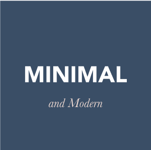
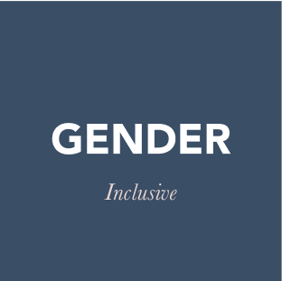
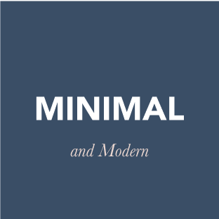
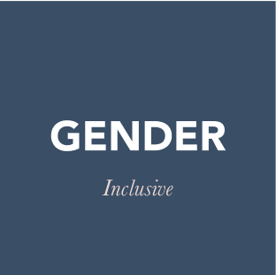

Verve is a cloud storage app that makes it easier for users to manage a healthy lifestyle while staying organized.
Roles
-
User Researcher
-
UX Design
-
Visual Design
-
Branding & Identity
Deliverables
-
Competitive Analysis
-
User Surveys
-
User Personas
-
User Stories & Flows
-
Wireframes
-
User Testing
-
Brand Identity
-
Visual Design
-
Hi-Fidelity Prototype
Tools Used
-
Survey Monkey
-
Figma
-
Marvel
-
Maze
-
Usability Hub
Summary
Verve for iOS is a cloud storage app that promotes good health and wellness through organization and collaboration. While allowing users to upload, organize and share any kind of document, Verve places a priority on files that relate to your self care products, notes and activities and provides useful insights on how to make healthier choices to achieve your goals.
Problem
The client challenged us to find an entry into the cloud storage with a unique set of features to meet the needs of a particular audience.
Solution
I identified a niche audience and market opportunity for a cloud storage solution that encourages better grooming, health and wellness. I designed Verve for iOS to give users a streamlined cloud storage solution with the added benefit of useful insights.
Discovery & Research
User Survey
I embarked on the project by first surveying a group of participants to better understand how they use cloud storage.
| 67% | 50% |
| prioritize physical, mental & emotional wellbeing | are motivated to achieve goals with social support |
| 94% | 67% |
| create or view files on their mobile device | would pay more for advanced features |
User Personas
The survey provided great insight into the attitudes and opinions of potential users, and I constructed two personas based on the survey responses to represent the trends I spotted.

Competitive Analysis
I analyzed four competitors, Google Drive, Dropbox, Flöka and LovelyLoot . The most important revelation was that while general providers are overlooking niches, niche providers are severely limiting functionality. Neither provides both general use and opportunity for specialization.

|
|||
| S | W | O | T |
| Industry Recognition; integration with other Google Services | Stale UI evolution; big data distrust | Improve mobile experience and UI; allow more customization | Smaller companies appealing to those distrustful of large corporations; niche providers catering to smaller groups more powerfully |

|
|||
| S | W | O | T |
| Robust features; UI updates on trend | Low freemium offerings; Paper mobile app not integrated with documents app; big data distrust | Offer more freemium bandwidth; allow more customization | lower cost competitiors; small data niche providers catering to smaller groups more powerfully |

|
|||
| S | W | O | T |
| Strong niche definition; clean and simple interface; strong product catalog for easily adding your items | Limited to just beauty; low brand recognition | Offer overall wellness product tracking; expand file type compatibility | Limited options may encourage users to turn to more robust, less niche specific alternatives. |

|
|||
| S | W | O | T |
| Strong niche definition, allows for specific customer targeting | MVP in initial release, but feature bloat makes it hard to know where to begin; UI deficiencies; new to market and low recognition | Expand to allow sharing; make it more gender neutral; expand file type compatibility | Slow development may lose engagement; feature bloat may lead to user fatigue; users may turn to a simpler product.. |
Information architecture
User Stories & Flows
With a clear picture of the target audience, I was able to document the high priority user stories that a user would need to fulfill.
| As a new user | I want to sign up |
| As a new user | I want to upload a file or folder from a device |
| As a new user | I want to upload content from the web |
| As a new user | I want to create a new folder |
| As a new user | I want to tag or group content |
| As a new user | I want to create content |
| As a returning user | I want to view existing files or folders |
| As a returning user | I want to view collaboration from other users |
| As a returning user | I want to provide collaboration to other users |
| As a returning user | I want to share content with a collaborator |
| As a returning user | I want to add and remover users |
| As a returning user | I want to adjust permissions for users |
| As a returning user | I want to share content to social media |
After initially creating one large flow to represent the three main processes users would undertake, I divided them into four user flow groups to be more digestible:
- 1. Onboard
- 2. Upload or create content
- 3. Browse, edit, collaborate and share content
- 4. Analyze insights
Onboard a New User

Site Map & Content Strategy
I created a site map and detailed the content strategy for further clarity on how the solution would be organized, page by page. I would come to find that rather than being an exhaustive accounting for every page the final product would have, it was more of an overview including the key pages.
Laying out the pages and content in this early stage revealed many questions about how the product would develop.

Sketches, Lo- Fidelity Wireframes & Prototype
I found that there were screens that should be consolidated, some that were not useful and some that were overlooked in sketching, such as the difference between the dashboard of a new user vs that of a returning user and the view of a text Input window after a user enters the text and before they proceed to click a link. As a result, my sketches are different from my lo-fi wireframes but reflect a series of digital iterations after these discoveries and review during a design critique.


User Testing Lo-Fi Wireframes
I recruited three user testers to evaluate the protoype’s usability. They were asked to complete three tasks.
- 1. Sign up for an account
- 1. Add a piece of content
- 1. Organize a piece of content
Key Takeaways

 


